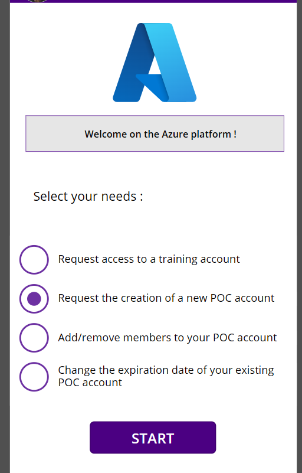

Demander la création d’un compte POC
Dans l’application Azure Platform, sélectionnez Request the creation of a new POC account et complétez les informations demandées.
- Ouvrez l’application Power Apps.
- Sélectionnez Request the creation of a new POC account.
- Renseignez le besoin, les membres et le budget. Pour une démonstration standard, indiquez 20 $.
- Envoyez la demande pour validation.
